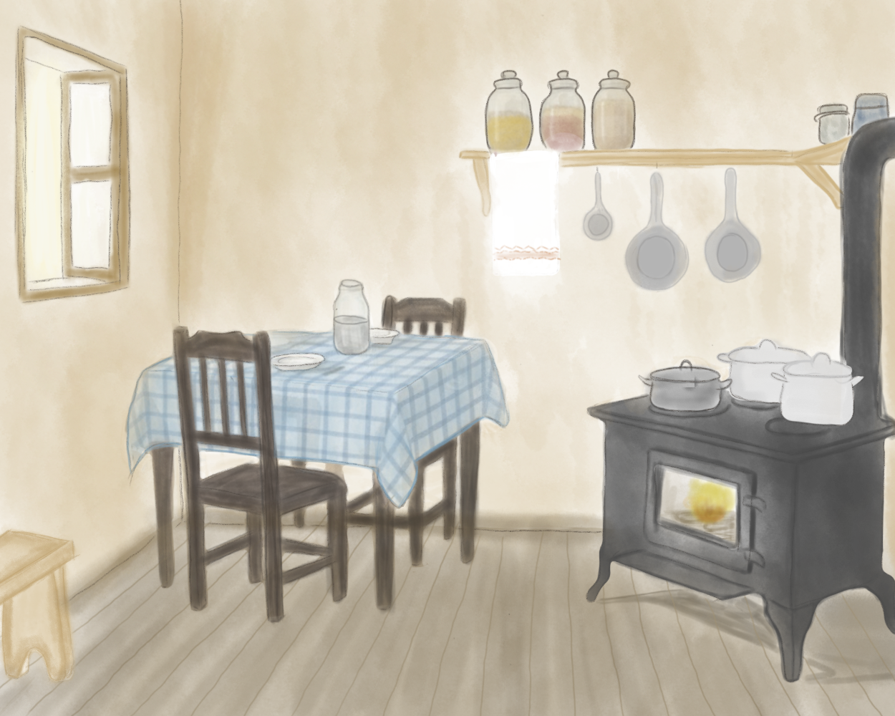
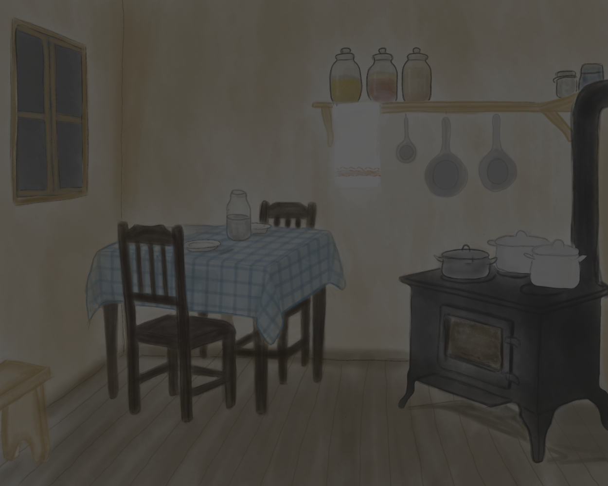
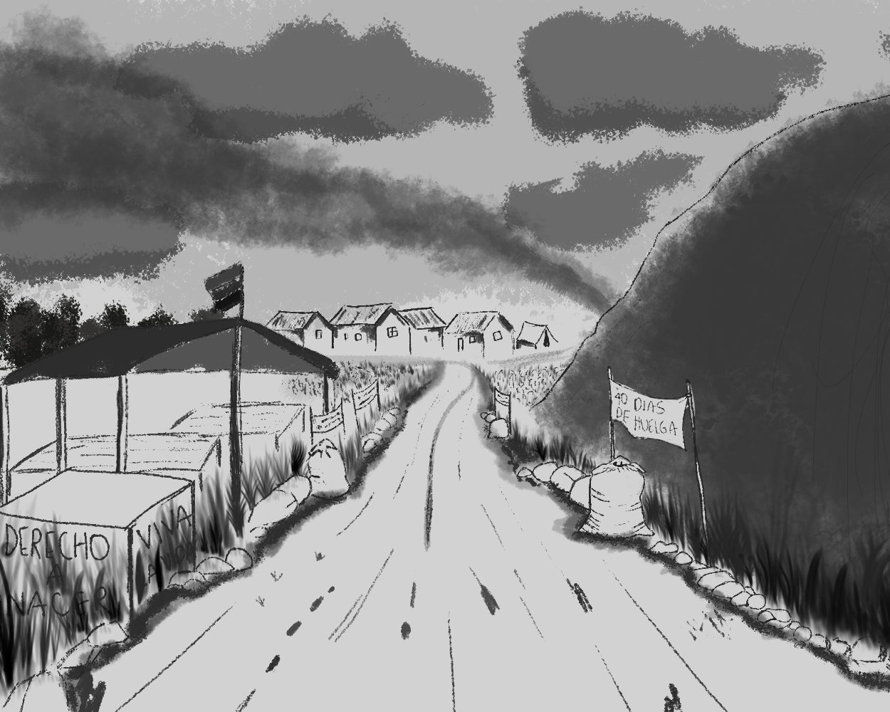
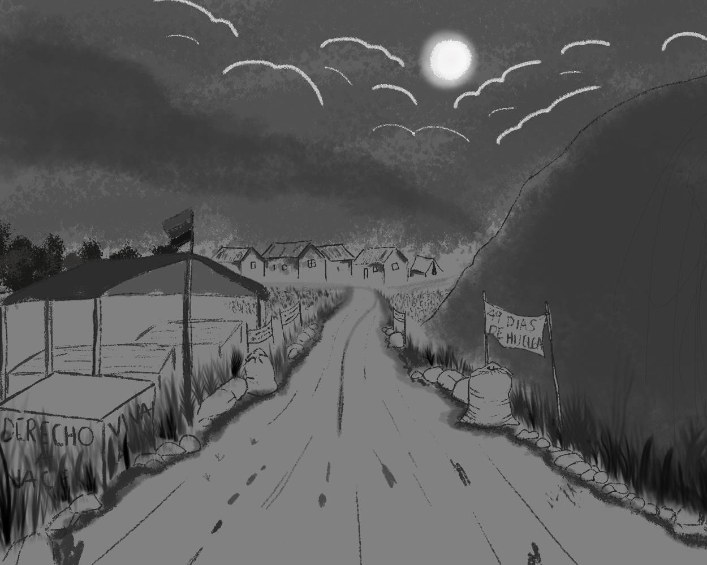
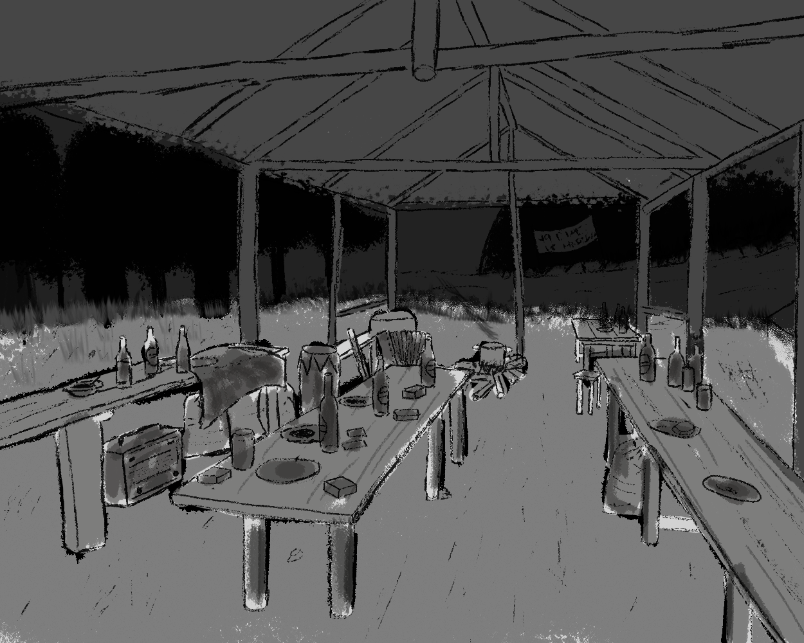
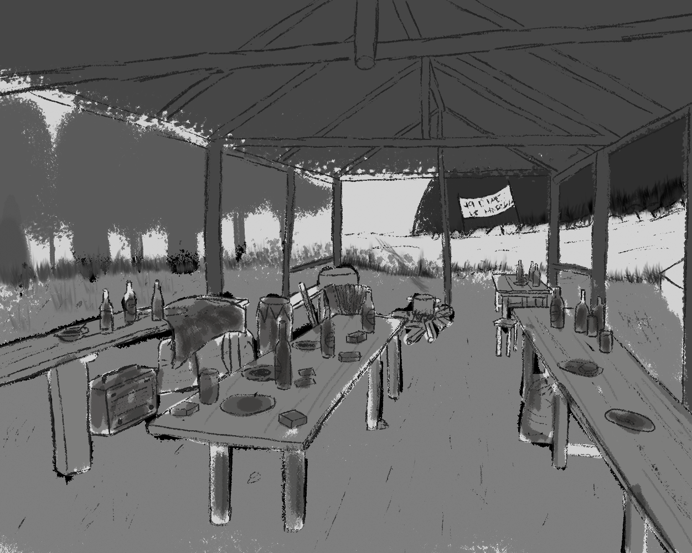
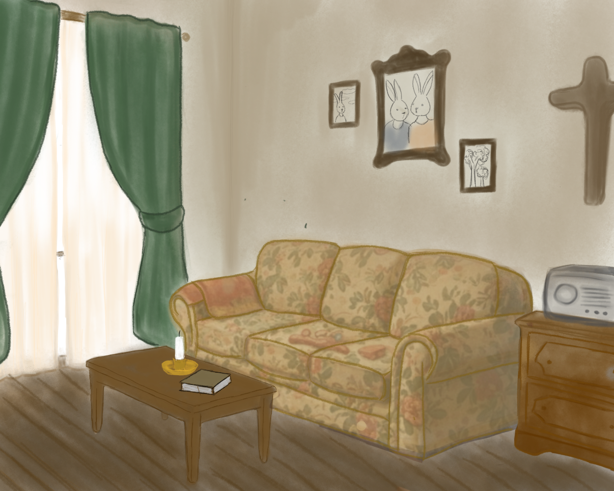

El precio de resistir
Concept art de un proyecto audiovisual en VR 180° que recrea, desde la mirada de un niño, la huelga obrera de 1963 en la cementera El Cairo, Santa Bárbara, Antioquia.

Descripción
El precio de resistir es el concept art de un proyecto audiovisual en formato VR 180° que recrea, desde la perspectiva de un niño, los acontecimientos de la huelga de los trabajadores de la cementera El Cairo, en Santa Bárbara (Antioquia), en 1963. El proyecto combina investigación histórica y creación narrativa para representar las condiciones sociales, las luchas obreras y las experiencias de las familias afectadas por la represión estatal.
A través de Daniel, el protagonista —representado como un pequeño conejo—, se contrasta la dureza del entorno con la imaginación como refugio frente a la violencia. Su propósito es preservar la memoria de este episodio histórico desde una mirada sensible y crítica, contribuyendo a reconocer las luchas sociales y la resistencia como un acto de dignidad colectiva.
Es una adaptación narrativa de "Las Cruces Sobre el Agua", novela social e histórica de Joaquín Gallegos Lara, que narra la masacre obrera del 15 de noviembre de 1922 en Guayaquil, Ecuador. Tomamos como referencia especialmente su capítulo IV, centrado en la explotación laboral y las injusticias que enfrentaban los jóvenes trabajadores de la época, para trasladar ese mismo espíritu de denuncia al contexto colombiano de 1963.
Proceso de desarrollo
- Investigación históricaInvestigué las condiciones laborales y el contexto social de la huelga de 1963 en la cementera El Cairo, en Santa Bárbara, Antioquia, como base documental del proyecto.
- Adaptación narrativaTomé "Las Cruces Sobre el Agua" de Joaquín Gallegos Lara como punto de partida y desarrollé la idea narrativa de trasladar ese espíritu de denuncia obrera al contexto colombiano, contado desde la mirada de un niño.
- Fichas de personajeDesarrollé las fichas de personaje, incluyendo a Daniel, representado como un pequeño conejo para reforzar el contraste entre la dureza del entorno y la imaginación como refugio.
- Dirección de arteDirigí a las ilustradoras del equipo en el desarrollo visual de personajes y escenarios, manteniendo coherencia con la investigación histórica y la intención narrativa.
- PlaneaciónConstruí un diagrama de Gantt en Excel para llevar el cronograma de trabajo del equipo a lo largo del proyecto.
- Diagramación del libro de producciónDiagramé por completo el libro de producción, documentando el desarrollo conceptual, creativo y técnico de la obra.
Equipo
Lideré el proyecto: investigación, análisis, fichas de personaje, idea narrativa y diagramación del libro de producción. Las ilustraciones se desarrollaron bajo mi dirección junto a:
- Danna Peña, Evely Bonilla, Camila Sáyer — Ilustración de personajes
- Natalia Aguilar, Zharyk Castro — Ilustración de escenarios
Desafíos y aprendizajes
Uno de los mayores retos fue coordinar el trabajo del equipo mientras lideraba la adaptación de una narrativa existente sin perder su esencia. La organización, la comunicación constante y una correcta distribución de responsabilidades fueron fundamentales para lograrlo. Además, utilicé un diagrama de Gantt con todas las tareas planificadas para hacer seguimiento al avance del proyecto y mantener una gestión ordenada. Esta experiencia fortaleció mis habilidades de liderazgo, planificación y trabajo colaborativo dentro de un equipo multidisciplinario.
Herramientas
Habilidades demostradas
Galería








